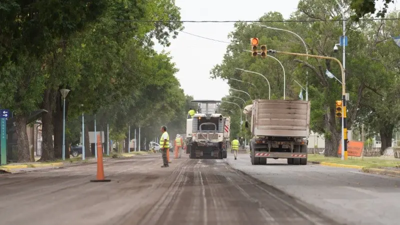
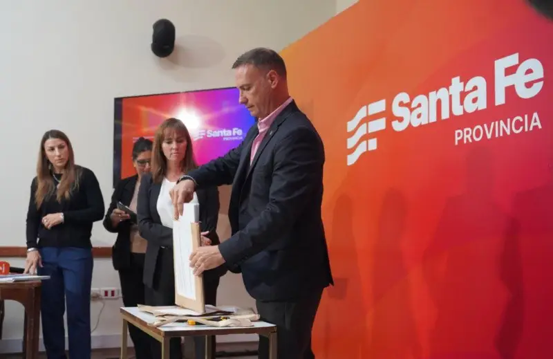
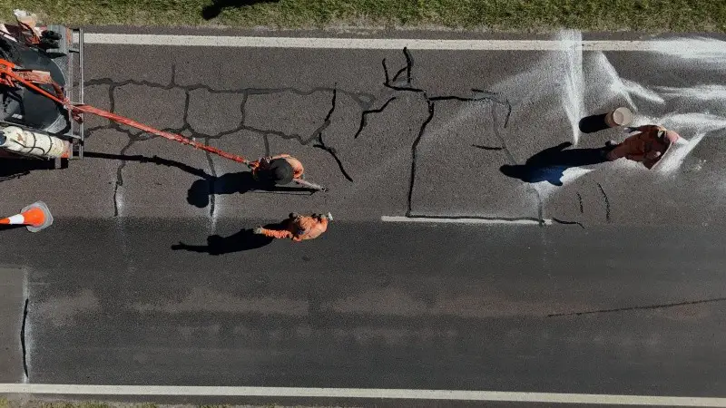
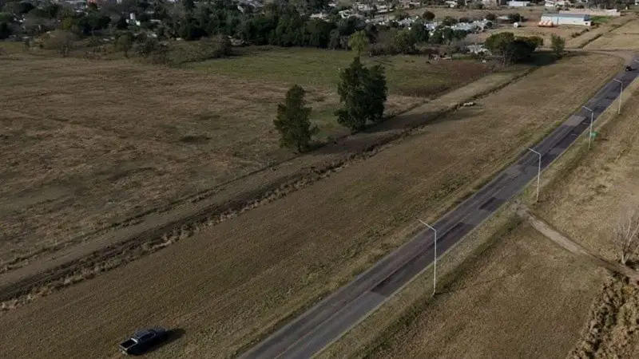

El gobierno de Pullaro inició el proceso licitatorio al que se presentaron 30 ofertas para intervenir en 4.600 kilómetros de rutas provinciales. Habrá 12 frentes de obras en simultáneo. “Esto contrasta con el abandono del Estado Nacional, y demuestra que cuando no se roba se puede hacer obra pública”, dijo el ministro Lisandro Enrico.

El Gobierno de Santa Fe puso en marcha este martes el proceso licitatorio para ejecutar tareas de mantenimiento y reparación de distintos tramos en más de 4.500 kilómetros de rutas provinciales. La iniciativa se estructura en seis licitaciones y contempla una inversión superior a los 52.000 millones de pesos.
En esta primera etapa se conocieron las ofertas técnicas y, una vez superada esa instancia, se procederá a la apertura de las propuestas económicas. El acto se realizó en el Salón Auditorio de la Casa de Gobierno y contó con la participación del ministro de Obras Públicas, Lisandro Enrico, y del administrador de la Dirección Provincial de Vialidad (DPV), Pablo Seghezzo.

Según se informó, el plan se ejecutará con 12 frentes de trabajo en simultáneo -dos por cada contrato-, lo que permitirá avanzar de manera coordinada en distintos puntos del territorio provincial.
Enrico subrayó la magnitud de la inversión y su impacto: “Es una noticia importante que queremos que la sociedad santafesina conozca. Sabemos que hay problemas en las rutas, pero también hay una decisión clara de invertir para repararlas”. En ese sentido, remarcó el contraste con la situación de las rutas nacionales: “Mientras padecemos el abandono de Nación, la Provincia destina recursos para sostener su red vial”.

El ministro también hizo hincapié en la transparencia de los procesos: “Queremos demostrar que estas obras son posibles, que con licitaciones públicas, abiertas y transparentes se pueden obtener buenos precios y ejecutar trabajos necesarios”.
Por último, destacó el carácter integral del programa: “Es un plan abarcativo y sistémico, que incluye intervenciones en más de distintas rutas de pavimento, tanto en tramos cortos como extensos. No se trata de repavimentaciones completas, sino de reparaciones orientadas a resolver problemas concretos y mejorar la durabilidad de los caminos”.
Por su parte, Seghezzo explicó que una de las claves del programa es el sellado de fisuras, una técnica de bajo costo que permite prolongar la vida útil del pavimento. “Evita la filtración de agua y la formación de baches, lo que se traduce en una mayor durabilidad de las rutas”, señaló.
Asimismo, indicó que, si el proceso licitatorio avanza según lo previsto, en un plazo de entre 60 y 90 días comenzarán las obras. La priorización de los tramos se definió en función del estado de deterioro y del volumen de tránsito, con especial atención a las rutas con mayor circulación de camiones y vehículos particulares.
Frentes de obra y oferentes
Las seis licitaciones se distribuyen por regiones: Bacheo 1 abarca Reconquista y Vera, con una inversión superior a los 14.000 millones de pesos; Bacheo 2 comprende San Cristóbal y Tostado, con casi 5.700 millones; Bacheo 3 se concentra en Rafaela, con cerca de 6.900 millones; Bacheo 4 incluye San Javier y La Capital, con más de 8.500 millones; Bacheo 5 corresponde a la zona de El Trébol, también por encima de los 8.500 millones; y Bacheo 6 cubre Rosario y Venado Tuerto, con una inversión superior a los 7.000 millones.

Al proceso licitatorio se presentaron 12 empresas y cuatro uniones transitorias de empresas (UT) que realizaron un total de 30 ofertas. Las firmas son: Bruno Construcciones S.A.; DeRosario Servicios S.R.L.; Obring S.A.; Pelque S.A.; Edeca S.A.; Pose S.A.; Savyc S.A.; Rovial S.A.; Rava S.A. de Construcciones; Laromet S.A.; Coingsa S.A.; Vial Agro S.A.; y las UT Rava S.A. de Construcciones - Inar Vial S.A. - Grupo de Bacheo N°4; Rava S.A. de Construcciones - Néstor Julio Guerechet S.A. - Bacheo G1; y Rava S.A. de Construcciones - Néstor Julio Guerechet S.A. - Bacheo G2; e ICF S.A. - ICA S.R.L.